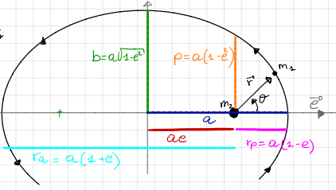

Elliptic Orbits#
Prepared by: Noah Leigh, Ilanthiraiyan Sivaganamoorthy, and Angadh Nanjangud
In this lecture we aim to cover the following topics:
The Eccentricity Vector#
Deriving The Eccentricity Vector#
The Eccentricity vector \(\mathbf{e}\) helps us describe the shape of an orbit and its direction. We can find it by taking the cross product of the velocity and the specific angular momentum:
Such as:
(73)#\[\ddot{\mathbf{r}} = - \frac{\mu}{r^3} \mathbf{r}\]Taking the cross product with the specific angular momentum, \(\mathbf{h}\):
\[ \ddot{\mathbf{r}}\times\mathbf{h} = - \frac{\mu}{r^3} \mathbf{r}\times\mathbf{h} \]Using the rule for \(\mathbf{a}\times\mathbf{b}\times{\mathbf{c}}=(\mathbf{c}\cdot\mathbf{a})\mathbf{b}-(\mathbf{b}\cdot\mathbf{a})\mathbf{c}\) with \(\mathbf{h}=\mathbf{r}\cdot\dot{\mathbf{r}}\) :
\[ -\frac{\mu}{r^3}\left[ (\dot{\mathbf{r}}\cdot\mathbf{r})\mathbf{r}-(\mathbf{r}\cdot\mathbf{r})\dot{\mathbf{r}} \right]\rightarrow-\frac{\mu}{r^3}(\dot{r}r\mathbf{r}-r^2\dot{\mathbf{r}})\rightarrow-\frac{\mu}{r^2}(\dot{r}\mathbf{r}-r\dot{\mathbf{r}}) \]\[\Rightarrow \frac{d}{dt}\left(\mu\frac{\mathbf{r}}{r}\right)\]This gives us:
\[ \Rightarrow \dot{\mathbf{r}}\times\mathbf{h} - \mu\frac{\mathbf{r}}{r} = constant \]Which can be rewritten as:
(74)#\[\mathbf{e}=\frac{\dot{\mathbf{r}}\times\mathbf{h}}{\mu}-\frac{\mathbf{r}}{r}\]This is our equation for the eccentricity vector!
The first integrals of motion:
\(\mathbf{e}\) is a constant vector, implying both constant direction and magnitude.
\(\mathbf{e}\) lies in the plane of motion and is fixed.
Let’s define:
(75)#\[e = \frac{\mathbf{e}}{\mu}\]where \(e\) is the eccentricity.
Properties#
\(\mathbf{e}\) lies in the plane of motion and (since it is constant) has a fixed magnitude and direction. \(\Rightarrow \hat{i}\equiv\mathbf{e}\), so we can use the eccentricity as one of the axes.
The eccentricity, \(e=|\mathbf{e}| \geq 0\), determines the shape of the orbit:
\(e = 0\): Circular orbit
\(0 < e < 1\): Elliptic orbit
\(e = 1\): Parabolic orbit
\(e > 1\): Hyperbolic orbit
The Equation of the Orbit#
If we look at the dot product of \(\mathbf{e}\cdot\mathbf{r}\) we know that: \(\mathbf{r}\cdot\mathbf{e}=recos(\theta)\) and if we recall \(\mathbf{a}\cdot(\mathbf{b}\times\mathbf{c})=(\mathbf{a}\times\mathbf{b})\cdot\mathbf{c}\) then:
So then this equivalence implies:
\(\theta\) is called the true anomaly.
This is another way of expressing Kepler’s 1st Law - the orbit of a planet is an ellipse with the sun at one of the two focii. This is an Equation of the Orbit.
Note: \(\theta\) can also be expressed as \(v\) or \(f\)
r describes the shape of the orbits as conic sections through the varying eccentricities shown before but it is important to note that:
Operative orbits are always circular or elliptic. As these keep the satellite closest to the planet of interest for as long as possible.
Hyperbolic orbits are maneuvers used on interplanetary missions to reduce propellant use by using the gravity of a body to reach another target body.
Elliptic Orbits#
{kind=link}

Fig. 6 An ellipse demostrating the different properties of an elliptical orbit, all shown in different colours.#
a = semi-major axis
b = semi-minor axis
p = semi-latus rectum
\(\textcolor{#646464}{\mathbf{e}}\) is aligned with the apsides and point towards the perigee
Key Parameters#
semi-major axis \(a\): This is the axis of the ellipse that has the longest diameter.
semi-minor axis \(b\): This is the axis of the ellipse with the shortest diameter.
Semi-latus rectum \(p\): This is the distance from the foci (orbitted body) to the orbit measured perpendicular to the semi-major axis.
(77)#\[p = a(1 - e^2)\]Perigee (\(r_p\)): The lowest point in an orbit/the point closest to the orbitted body.
(78)#\[r_p = a(1 - e)\]Apogee (\(r_a\)): The highest point in an orbit/the point furthest from the orbitted body.
(79)#\[r_a = a(1 + e)\]
Determination of the Orbit#
Given focus \(\mathbf{r_o}\) and \(\mathbf{v_o}\), compute \(\mathbf{h}\) and \(\mathbf{e}\).
Compute the semi-latus rectum, \(p = \frac{h^2}{\mu}\)
Compute the semi-major axis,\(a\), using \(p\), (77): \(a=\frac{p}{1-e^2}\)
Compute the apsides points (most extreme points in the orbit) using (78) and (79) .
Vis-Viva Equation#
The Vis-Viva Equation is used to find the velocity at any given r when a maneuver is planned.
The Equation: The total energy of the orbit is the sum of the kinetic energy and the potential energies of the orbit.
The sum of the potential energies is the effective potential energy, \(\phi_{eff}\):
At perigee and apogee the velocity = 0 so \(E_{r_p}=\phi_{eff}(r_p)\) so we can derive an equation for the specific orbital energy as a function of \(a\).
\(\Rightarrow\) orbits with the same semi-major axis have the same orbital energy.
This means that the Vis-Viva Equation is, using equations (80) and (81):
So the velocity of an orbitting body can be found whether you have the position or the semi-major axis of its orbit.
Conclusion#
The eccentricity vector is a fundamental constant vector in orbital mechanics.
The orbit equation describes different conic sections based on the value of the eccentricity \(e\).
The Vis Viva equation (82) is a crucial tool in mission planning for calculating velocities at various points in an orbit.